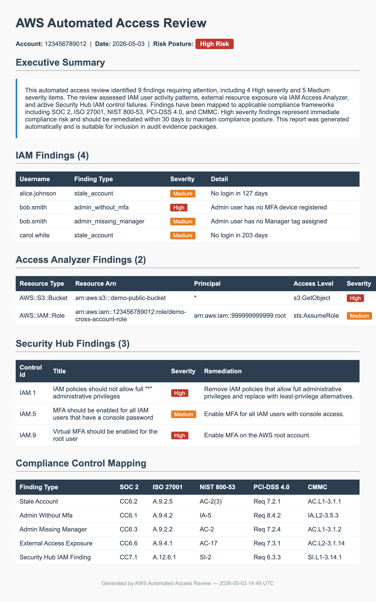

Problem Statement
Manual access reviews are one of the most consistently failed controls in SOC 2 and ISO 27001 audits — not because teams don't understand the requirement, but because the process is time-consuming, inconsistent, and easy to defer under audit pressure. When it does happen, the output is often a spreadsheet someone assembled the night before the assessment — data an auditor has to accept without any way to verify it.
The goal was a system that runs without human intervention, checks the controls that actually matter, and produces a timestamped, self-contained report that lands in S3 automatically. Something an auditor can open and act on, not something someone had to put together under deadline pressure.
Architecture Decision
The serverless choice wasn't a default — it was a GRC-informed infrastructure decision. Every component was chosen because it reduces audit surface, not just operational overhead.
What the System Actually Checks
Each finding source maps to a specific compliance risk — not just a configuration gap. The system checks the things auditors actually test for.
The Output: HTML Report with Executive Narrative
The report module generates a self-contained HTML file — no external dependencies, no server required to view it. An auditor can open it directly from S3 or download it and view it offline. This is a deliberate design choice: the report is the evidence artifact, not a dashboard that requires system access to interpret.
The narrative module generates an AI-written executive summary via Bedrock — translating raw IAM findings into business-readable risk language. This is the bridge between technical output and GRC-consumable evidence: the kind of summary a CISO or auditor can read without parsing JSON.

Compliance Frameworks Addressed
The report structure maps findings directly to control references across six frameworks — an auditor can use the output as evidence without any additional translation work.
Demo Mode
The deployed portfolio version runs with DEMO_MODE=true — the system generates realistic synthetic findings rather than pulling live IAM data from a real AWS account. This means the system can be shared and demonstrated safely without exposing production credentials or real access review results.
Test Coverage
28 tests pass across all six modules — each finding source is tested against mock boto3 responses so the pipeline catches regressions before they produce a silently incorrect compliance report.